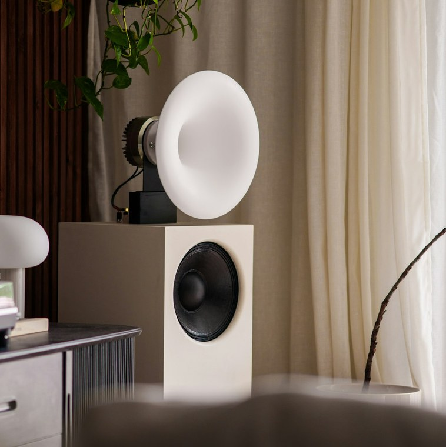
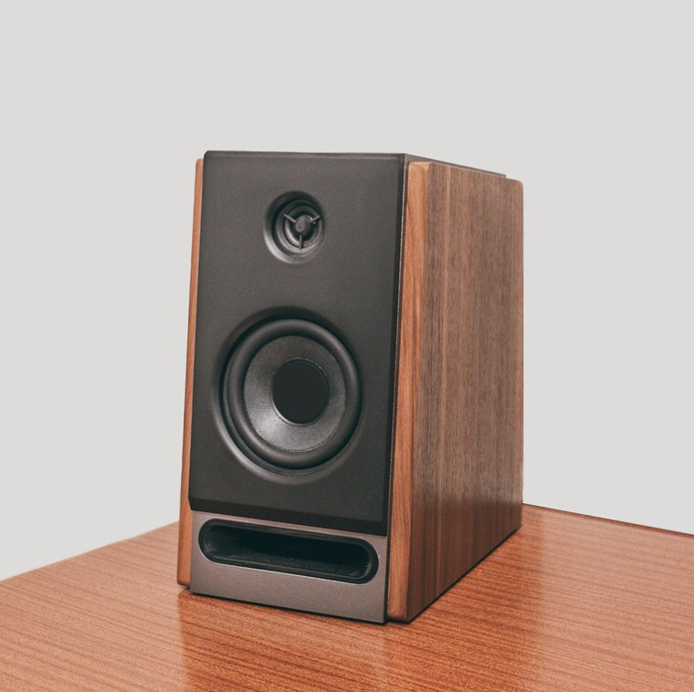
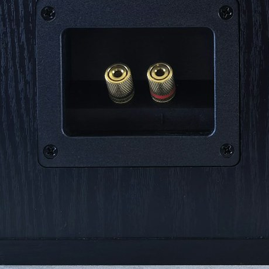
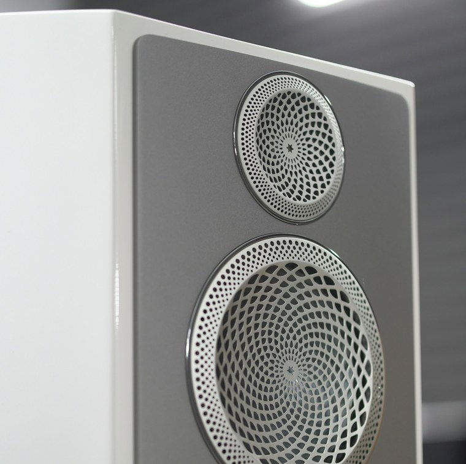
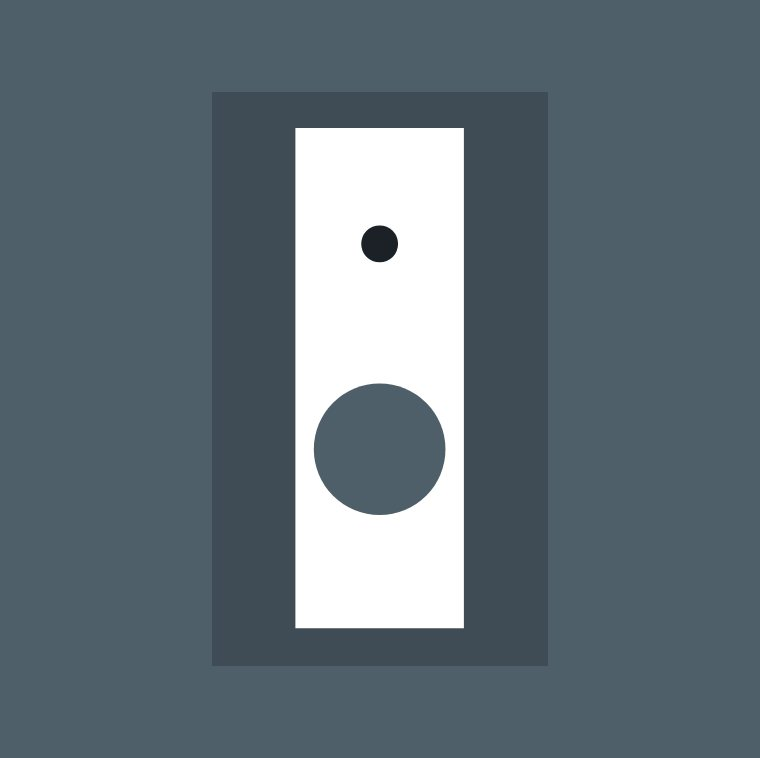

Vier Modelle, ein System
Kompakt, zeitlos und durchdacht: Unsere Lautsprecher füllen den Raum, ob an der Wand oder frei aufgestellt.


CANTO
Kompakt- und Standlautsprecher
CANTO ist unser neustes Modell, zweiteilig und für niedrige Plätze gebaut. Er klingt viel grösser, als er aussieht.
CANTO c ist der obere Teil allein, für das Lowboard. CANTO s ergänzt ihn um einen Sockel zum vollwertigen Standlautsprecher.
Im Heimkino passt CANTO als Mittenkanal unter den Bildschirm.

ARIA
Analoger Aktivlautsprecher
ARIA ist kompakt, klingt im ganzen Raum gleich gut und darf nah an die Wand. Möglich macht das die eingebaute Aktivtechnik, die für kräftige, saubere Bässe sorgt.
Drei Töner sitzen rund um den Hochtöner, damit der Klang wie aus einem Punkt kommt. Das steife Gehäuse hält sich dabei akustisch zurück.

SOLO
Passiver Standlautsprecher für die wandnahe Aufstellung
SOLO ist bewusst einfach gehalten: zwei Töner, gute Materialien und ein Klang, der sich vom Gehäuse löst.
Dank der Wand im Rücken hat er erstaunlich viel Bass. Ohne Sockel lässt er sich auch aufhängen, und die Schale gibt es in vielen Farben.

PARETE
Wandlautsprecher, Inwall und Onwall
Eine Wand verstärkt den Bass ganz natürlich. PARETE nutzt das und klingt deshalb viel tiefer, als sein kleines Gehäuse vermuten lässt.
Er wird so eingebaut, dass die Wand selbst nicht mitschwingt.
PARETE gibt es hoch oder quer, in die Wand gebaut oder darauf montiert. Er passt zu Stereo, Heimkino und Geschäftsräumen.